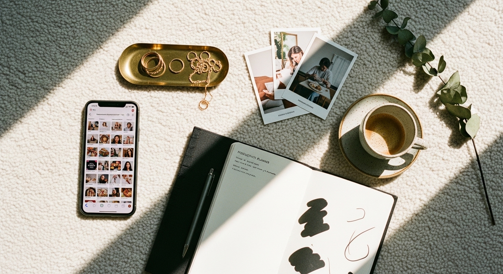
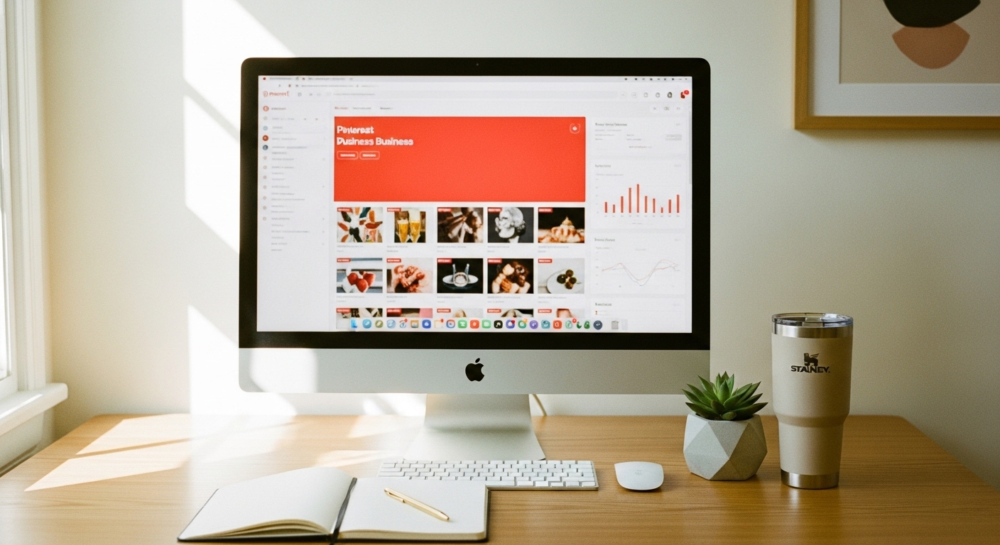
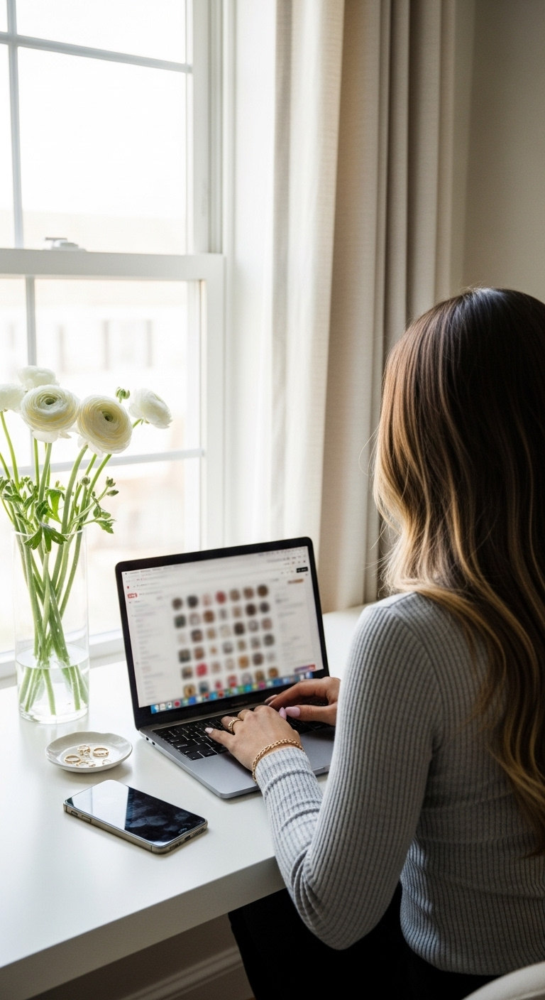

how to earn money from pinterest



HOW TO EARN MONEY FROM PINTEREST: A REALISTIC GUIDE FOR COACHES AND SERVICE PROVIDERS
Pinterest does not pay you directly for posting pins or getting impressions. There is no "earnings" dashboard in your business account, and you will never be asked for your bank details by the platform itself. The money comes from what happens after someone clicks your pin - when they land on your website, your product listing, your booking page, or an affiliate link.
This is the first thing you need to understand, because it changes everything about how you approach the platform.
If you have been posting pins hoping that views would somehow translate into dollars the way YouTube pays for watch time, that explains why nothing has happened. Pinterest works differently. It is a visual search engine where people go to find solutions, plan purchases, and make decisions - and your job is to be the answer they find.
The good news? This makes Pinterest one of the most powerful platforms for coaches, service providers, and digital product sellers. The users are not scrolling mindlessly. They are actively searching for what you offer. And once you understand how the money actually flows, you can build something that generates income for months (or years) from pins you create today.
Here is exactly how it works - no fluff, no vague promises, no "just post consistently and the money will come" advice.
PINTEREST DOES NOT PAY YOU - BUT YOUR OFFERS CAN
Let me clear this up one more time, because I see this question constantly in forums and Reddit threads.
Pinterest does not pay creators for impressions. It does not pay for saves. It does not pay for followers. If someone tells you they made $10,000 "from Pinterest," they made that money from sales that came through Pinterest - not from the platform paying them directly.
This distinction matters because it determines your entire strategy.
Your Pinterest income comes from one of these sources:
- Traffic to your own digital products or services
- Affiliate commissions from products you recommend
- Brand partnerships where companies pay you to create content
- Email subscribers who eventually buy from you
Every single pin you create should have a clear path to one of these outcomes. If it does not, you are just decorating the internet.
So why is Pinterest still worth your time?
Because Pinterest users have significantly higher purchasing power than users on other platforms. According to Pinterest's own business data, the platform reaches 40% of US households earning over $150,000 annually. One in three online shoppers on Pinterest earns over $100,000 per year. These are not tire-kickers. These are people with money who are actively looking for solutions.
When a life coach creates a pin titled "Signs You Need a Career Change," and that pin links to her free clarity call booking page, she is meeting her ideal client at the exact moment they are searching for help. That is how Pinterest generates income - not through views, but through strategic positioning as the answer to what people are already searching for.
THE FOUR INCOME PATHS THAT ACTUALLY WORK
You do not need a blog to make money on Pinterest. This is outdated advice that keeps coaches and service providers stuck. You need something to sell or recommend - and a pin that connects searchers to that thing.
Here are the four realistic paths:
Path 1: Drive traffic directly to your services
A bookkeeper creates pins answering "What expenses can I write off as a small business?" Each pin links to her services page. She books two new clients per month directly from Pinterest traffic - no blog, no complicated funnel.
A virtual assistant specializing in launches creates a "Launch Day Checklist" pin linking to her inquiry form. Business owners searching for launch support find her organically. The pin does the marketing for her.
Path 2: Sell digital products without a middleman
A template designer creates individual pins for each Canva template in her shop, with titles like "Instagram Story Templates for Coaches" and links directly to her product listing. With strong keywords and clear visuals, each pin becomes a salesperson working around the clock.
A course creator designs pins around specific pain points - "How to Price Your Services Without Feeling Awkward" - and links to a free masterclass opt-in that leads to her paid program.
Path 3: Affiliate marketing (with proper disclosure)
A productivity coach creates a pin titled "The Exact Planner I Use to Plan My $10K Months" with an affiliate link to the planner. The disclosure appears in the pin description. When someone buys through her link, she earns a commission.
This works best when the pin solves a specific problem and the affiliate product is the solution - not when you are just creating generic "favorites" roundups nobody asked for.
Path 4: Build an email list that becomes income later
Every pin can link to a free download, a quiz, or a waitlist. Once someone is on your email list, you own that relationship. Pinterest reach can fluctuate. Your list cannot be taken away. If you have been exploring affiliate marketing on Pinterest, combining it with list-building makes each strategy stronger.
DALL-E / ChatGPT image prompt
A realistic mockup screenshot of a Pinterest pin analytics view for a single pin. Pinterest red (#e60023) header bar at top, white background. Shows a vertical pin image on the left (a clean, minimal Canva template mockup). On the right side, stats displayed: Impressions: 24,847, Saves: 312, Outbound clicks: 489, Pin clicks: 1,203. Below the stats, a line graph showing 30-day performance with an upward trend in blue. Clean modern UI, widescreen 16:9 format, flat design.
STEP-BY-STEP: SET UP YOUR PINTEREST FOR ACTUAL INCOME
Here is exactly what to do in your first two weeks - no guessing, no vague "be consistent" advice.
Week 1: Foundation
Step 1: Create or convert to a Pinterest Business Account. Go to pinterest.com/business/create. This is free and gives you analytics and the ability to run ads later if you want.
Step 2: Claim your website. Go to Settings, then Claimed Accounts, then add your website URL. This gives your pins more authority and lets you track all traffic from your domain.
Step 3: Write a keyword-rich profile description. "Helping female entrepreneurs build sustainable businesses through proven systems and templates" beats "Business lover and coffee enthusiast" every time. Include what you do and who you help.
Step 4: Create 5-10 boards named after what your ideal client searches. "Small Business Marketing Tips" - not "Boss Babe Vibes." Your board names are search terms. Make them work for you.
Week 2: Content creation system
Step 5: Design 3-5 pin templates in Canva at 1000x1500 pixels. Include a bold headline, your branding colors, and clear imagery. These templates let you batch-create pins quickly instead of starting from scratch every time.
Step 6: Write keyword-rich titles and descriptions. Your title should include the exact phrase someone would search. Your description should include related keywords, explain what they will get, and tell them where the link goes.
Example title: "How to Price Your Coaching Packages (Free Calculator)"
Example description: "Struggling to set your coaching rates? This free pricing calculator helps you determine exactly what to charge based on your experience and market. Save this Pin and download the calculator. Perfect for new life coaches and business coaches."
Step 7: Set a sustainable posting schedule. Minimum three to five fresh pins per week. Use Pinterest's native scheduler or a tool like Tailwind. The best time to post matters less than you think - consistency matters more.
DALL-E / ChatGPT image prompt
A realistic mockup screenshot of the Canva editor showing a Pinterest pin template being designed. Canva's purple and white interface with the left sidebar showing Elements, Templates, Uploads. Main canvas shows a 1000x1500px vertical pin with a bold headline "5 Signs You Need a Website Redesign," clean sans-serif typography, soft pink and white color scheme, a minimal laptop mockup image. Top toolbar shows text editing options. Right panel shows Layers. Widescreen 16:9, high resolution, modern flat UI design.
THE METRIC THAT MATTERS MOST FOR MONETIZATION
Most people obsess over impressions. Impressions are vanity. Saves are the metric that drives money.
When someone saves your pin, Pinterest takes notice. The algorithm reads that as a signal that this content is valuable - so it shows more of your content to that person, and to other people like them. Your reach compounds.
One pin with 200 saves will outperform a pin with 50,000 impressions and 10 saves every single time.
Here is what that means for your strategy:
Create pins worth saving. Tips, checklists, how-tos, resource lists, step-by-step guides - anything someone would want to reference later. A pretty inspirational quote gets scrolled past. A "Complete Checklist for Launching Your First Course" gets saved.
Explicitly ask for the save. In your pin description, add "Save this pin for later" or "Save this to your [topic] board." It sounds simple, but Pinterest's own creator resources confirm this increases saves.
Build your content around reference material. Think about what your ideal client would pin to a board called "Business Ideas" or "Marketing Tips" or "Website Inspiration." Create that.
This is why template sellers and service providers do particularly well on Pinterest. A pin showing a beautiful website template gets saved by people planning their own site. A pin showing a branding mood board gets saved by people dreaming about their rebrand. The save is the first step in the buying decision - it means they are considering you.
WHAT MOST COACHES GET WRONG (AND HOW TO FIX IT)
The biggest mistake I see coaches and service providers make on Pinterest: they treat it like Instagram.
Pinterest is not about connection, community, or showing your personality. It is a search engine. People come with questions. Your job is to be the answer.
Wrong approach: Creating pins that say "Monday motivation! Keep going!" with no link to anything useful.
Right approach: Creating a pin titled "How to Plan Your Week as a Solo Coach (Free Template)" that links to your email opt-in.
Wrong approach: Pinning your Instagram posts hoping someone will find them.
Right approach: Creating pins specifically designed for Pinterest searches, with keyword-rich titles and descriptions that match what your client is typing into the search bar.
Wrong approach: Expecting results in two weeks and giving up.
Right approach: Understanding that Pinterest is a long game. Pins can take 3-6 months to gain traction. But once they do, they work for you for years - not hours like an Instagram post.
If you have been frustrated that Pinterest "doesn't work," it is probably because you have been using social media tactics on a search engine. Fix this, and the traffic (and income) will follow.
HOW TO FIND WHAT YOUR AUDIENCE IS ACTUALLY SEARCHING
This is where most guides fail you completely. They say "use keywords" without telling you how to find the right ones.
Here is exactly how to do Pinterest keyword research:
Method 1: Pinterest search bar predictions
Start typing a phrase into Pinterest search. Watch what auto-completes. Those suggestions are real searches that real people are making right now. "Instagram templates" might auto-complete to "Instagram templates for coaches," "Instagram templates aesthetic," "Instagram templates Canva." Each of those is a pin idea.
Method 2: Pinterest Trends tool
Go to trends.pinterest.com (it is free). You can see what searches are rising, what is seasonal, and what your audience is interested in over time. If you are a life coach, search "coaching" and see what related terms are trending.
Method 3: Look at your top competitors' pins
Find other coaches or service providers in your niche who are doing well on Pinterest. Look at their most-saved pins. What are the titles? What keywords appear in the descriptions? You are not copying - you are researching what the market responds to.
Method 4: Your own analytics
Once you have been pinning for a month or two, your Pinterest analytics will show which pins are getting traction. Look at the titles and topics of your top performers. Create more variations around those themes.
The goal is not to guess what your audience wants - it is to meet them exactly where they are already searching.
If you want help implementing all of this without doing it yourself, my done-for-you Pinterest marketing service handles strategy, pin creation, and optimization so you can focus on serving clients instead of pinning for hours every week.
DALL-E / ChatGPT image prompt
A realistic mockup screenshot of the Pinterest Trends tool interface. White background with Pinterest red (#e60023) accents. Top search bar showing "coaching business" typed in. Main area shows a trending topics dashboard with line graphs comparing three search terms over 12 months: "life coaching" (blue line), "business coaching" (green line), "health coaching" (orange line). Each line shows seasonal patterns with labels. Below, a "Related trends" section shows clickable topic bubbles. Clean minimal design, widescreen 16:9, flat modern UI.
BRAND PARTNERSHIPS: NOT JUST FOR INFLUENCERS
Most small business owners skip right past brand partnerships because they assume you need 100,000 followers. You do not.
What you need is a specific niche and an engaged audience. If you are a productivity coach and you have 3,000 monthly viewers who are all entrepreneurs looking for systems, you are more valuable to a planner company than a lifestyle account with 50,000 random followers.
How to start:
- Build your audience first (aim for 10,000+ monthly viewers - this usually takes 3-6 months of consistent pinning)
- Create a simple media kit showing your niche, audience demographics, and engagement rates
- Reach out to brands whose products you already use and recommend
- Start with smaller brands who are actively looking for creator partnerships
Pinterest has a creator platform that facilitates brand partnerships. You can also reach out directly to brands through their marketing or partnership contact pages.
The key is that your content already naturally features the types of products these brands sell. A business coach who creates content about productivity tools is a natural fit for software companies, planner brands, and desk accessory businesses.
FREQUENTLY ASKED QUESTIONS
Can I really make money from Pinterest without a blog?
Yes. You can link pins directly to product listings, service booking pages, affiliate links, or email opt-in landing pages. A blog is just one possible destination - not a requirement. Many service providers and digital product sellers earn from Pinterest without ever writing a blog post.
How much do you get paid per 1,000 views on Pinterest?
Pinterest does not pay you based on views. Unlike YouTube, there is no ad revenue share for creators. Your income comes from what happens after someone clicks - sales of your products, bookings for your services, or affiliate commissions. Views without a monetized destination are just numbers.
Do people actually make real money from Pinterest?
Yes, but it works differently than most people expect. The income comes from traffic that converts to sales, not from Pinterest paying you directly. Coaches book clients, template designers sell products, and affiliate marketers earn commissions - all through traffic that originated on Pinterest.
How long does it take to start seeing results?
Plan for a 3-6 month runway before you see meaningful results. Pinterest is a search engine, and your pins need time to get indexed and gain traction. Pins created today might not peak in performance for months - but they can continue driving traffic for years.
Is affiliate marketing allowed on Pinterest?
Yes. You can add affiliate links directly to pins. You must disclose the affiliate relationship in your pin description. Pinterest allows this as long as you follow their guidelines and are transparent with users about the commercial relationship.
Do I need to post every day?
No. Three to five fresh, high-quality pins per week is enough to build momentum. Consistency matters more than volume. A sustainable schedule you can maintain for months will outperform a burst of daily posting followed by burnout and silence.
MAKING THIS WORK FOR THE LONG TERM
Here is the reality about how to earn money from Pinterest: it is not a get-rich-quick platform. It is a get-traffic-consistently-for-years platform.
The pins you create this month might not hit their stride until three months from now. But once they do, they keep working. I have seen pins drive traffic for two, three, four years after being created. That is the trade-off. Pinterest requires patience upfront and rewards you with longevity.
If you are a coach, service provider, or digital product seller who is tired of the Instagram hamster wheel - where you disappear for a week and your reach vanishes - Pinterest offers something different. A library of content that works for you while you are sleeping, on vacation, or focused on serving your clients.
The key is starting with the right foundation: a business account, keyword-optimized boards, pins designed for search rather than scroll, and a clear path from each pin to a monetized destination.
If you want to skip the learning curve and have someone build this system for you, my Pinterest marketing service includes a complete strategy, custom pin templates, and a full account setup - so you can start driving traffic without spending months figuring it all out yourself.
DALL-E / ChatGPT image prompt
A realistic mockup screenshot of Pinterest analytics overview dashboard. Pinterest red (#e60023) top navigation bar showing account name and profile icon. White background. Main panel shows four stat boxes in a row: Impressions 847,293, Engagements 42,156, Pin clicks 18,734, Outbound clicks 6,891. Below, a large line graph showing 90-day trend with dates on x-axis, all metrics trending upward. Left sidebar shows navigation options: Overview, Top Pins, Audience insights. Clean modern design, widescreen 16:9, flat UI aesthetic.
Let me know in the comments below if you want me to cover any branding or marketing topics in more depth, and I'll make sure to create a blog post about it in the future.